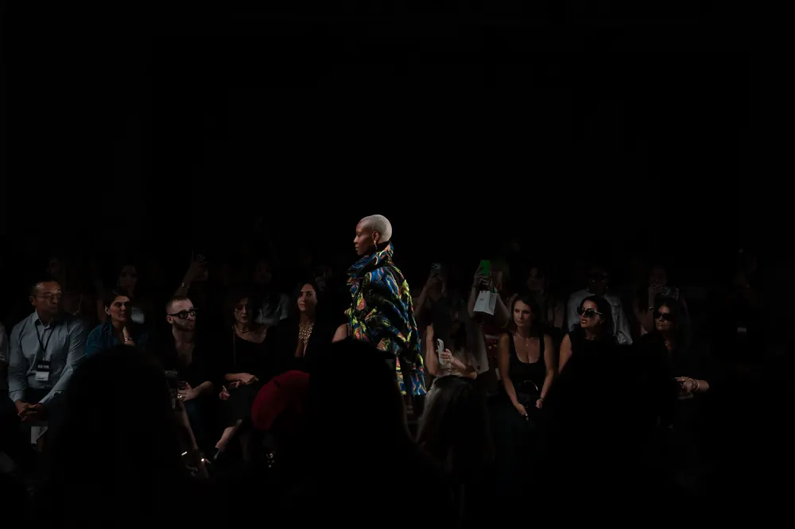
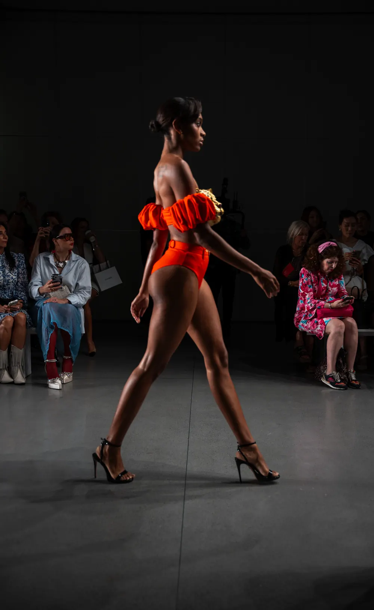

New York Fashion Week
Septembre 2026 · New York
Septembre 2026 à New York : le défilé collectif de Global Fashion Collective, puis PUBLIC SERV-CE, qui présentait « The Rest Is Noise » le 13 septembre à l'Arte Museum de Chelsea.
Global Fashion Collective
New York · Septembre 2026





Global Fashion Collective · Printemps-été 2027 · New York · Septembre 2026
PUBLIC SERV-CE
Raphael Young
Arte Museum, Chelsea · New York · 13 septembre 2026


PUBLIC SERV-CE · Raphael Young · Printemps-été 2027 · « The Rest Is Noise » · New York · Septembre 2026
Dans la salle